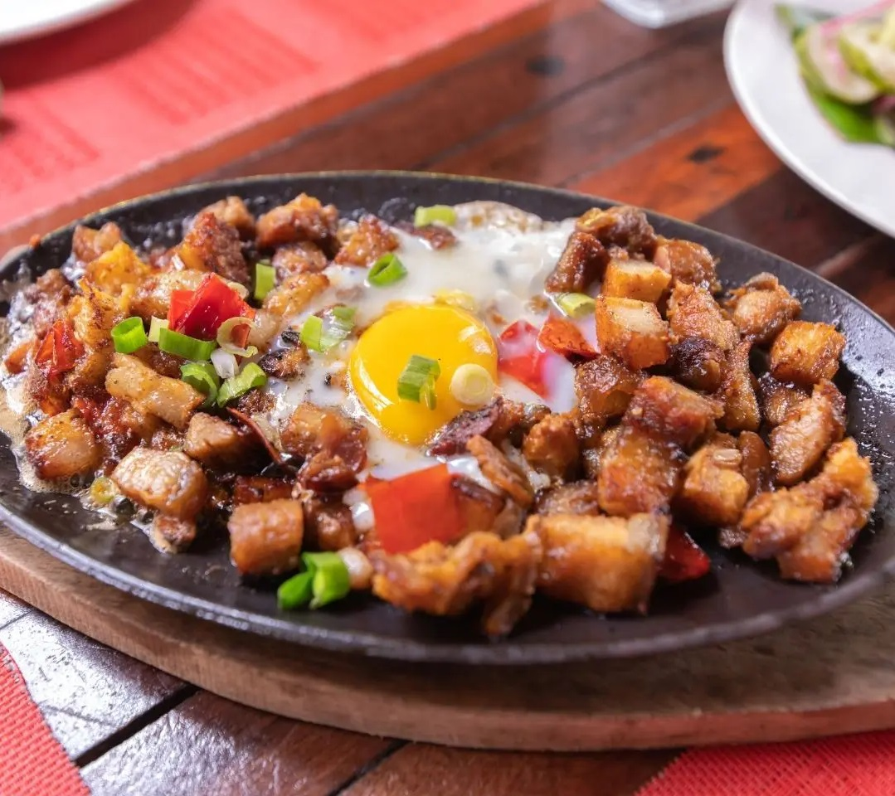
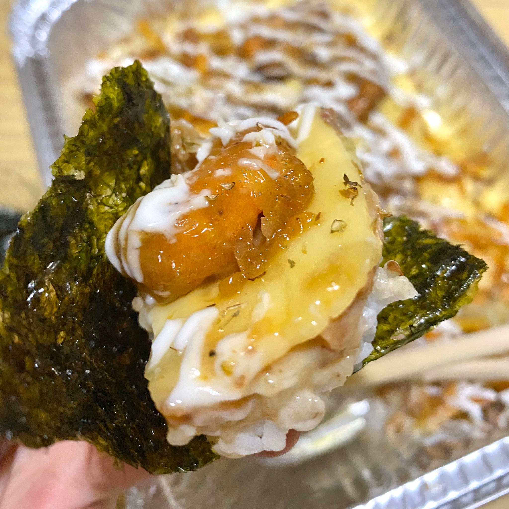
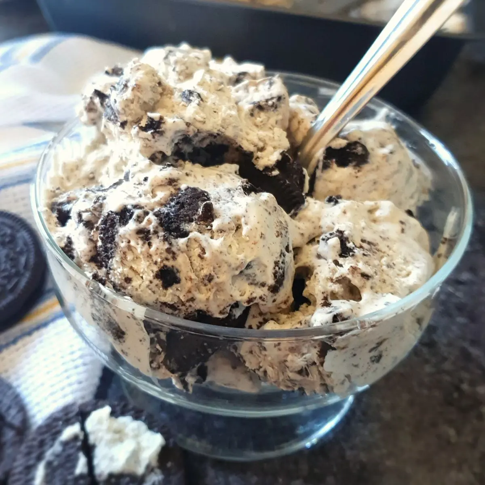

Favorite Foods
Below is a list of my favorite foods.
- Pork Sisig 
- Baked Sushi 
- French Fries
- Oreo Ice Cream 

Below is a list of my favorite foods.
Below is a list of my achievements.
My name is Marlon V. Maddara. I was born on August 31, 2001 in Saudi Arabia. I studied at the International Philippine School in Al-Khobar (IPSA), Saudi Arabia up until 3rd grade. I moved to the Philippines when I was just 9 years old and continued my studies at Notre Dame Siena College of Tacurong. I finished my 7th grade at NDSCT and then moved to Davao City to continue my education at the Ateneo de Davao University. I graduated my JHS and SHS at AdDU and I am now currently studying at Malayan Colleges Mindanao, taking up the course Computer Engineering.